Interactive User Guide¶
This step-by-step visual guide walks you through every view and interaction in the ADK Agentic RAG + Knowledge Graph platform—from signing in with Neon PostgreSQL Authentication to uploading documents, monitoring the live 5-step hybrid ingestion pipeline, managing indexed documents, querying the Google ADK Agent, and inspecting your Neo4j Knowledge Graph.
End-to-End User Workflow¶
flowchart LR
A["1. Authentication (Sign In / Create Account)"] --> B["2. Document Upload (Dropzone & File Preview)"]
B --> C["3. Hybrid Ingestion (Live Progress & Completion)"]
C --> D["4. Document Manager (Index Counts & Cascade Delete)"]
D --> E["5. Agentic Chat (4 Tools & Dual Citations)"]
E --> F["6. Knowledge Graph (Topology & 1-Hop Inspector)"]-
Authentication & Workspace Isolation
Sign in or register an isolated multi-tenant workspace backed by Neon PostgreSQL (
PBKDF2-HMAC-SHA256+HS256JWT). -
Document Upload
Drag and drop files across 13 supported formats, preview file metadata, and launch hybrid ingestion.
-
Live 5-Step Ingestion Pipeline
Watch real-time step-by-step execution across text extraction, chunking, Gemini embeddings, Neon
pgvector, and Neo4j. -
Document Management
Inspect per-document vector chunk, entity, and relationship counts or trigger atomic cascade deletion across both databases.
-
Agentic RAG + Graph Chat
Query the Google ADK
LlmAgentwith autonomous tool selection (hybrid_search,graph_search) and[Source]/[Graph]citations. -
Neo4j Knowledge Graph Explorer
Explore the interactive Neo4j SVG entity topology, filter by category, and click any node to inspect its 1-hop neighborhood.
Step 1: Create an Account or Sign In¶
When you open the application (http://localhost:5173), the Bioluminescent Neural Forest Authentication Modal appears in front of the Tree of Knowledge backdrop. Every account is stored in the Neon PostgreSQL users table and issues an HS256 signed JWT Bearer token.
Sign In to an Existing Workspace¶
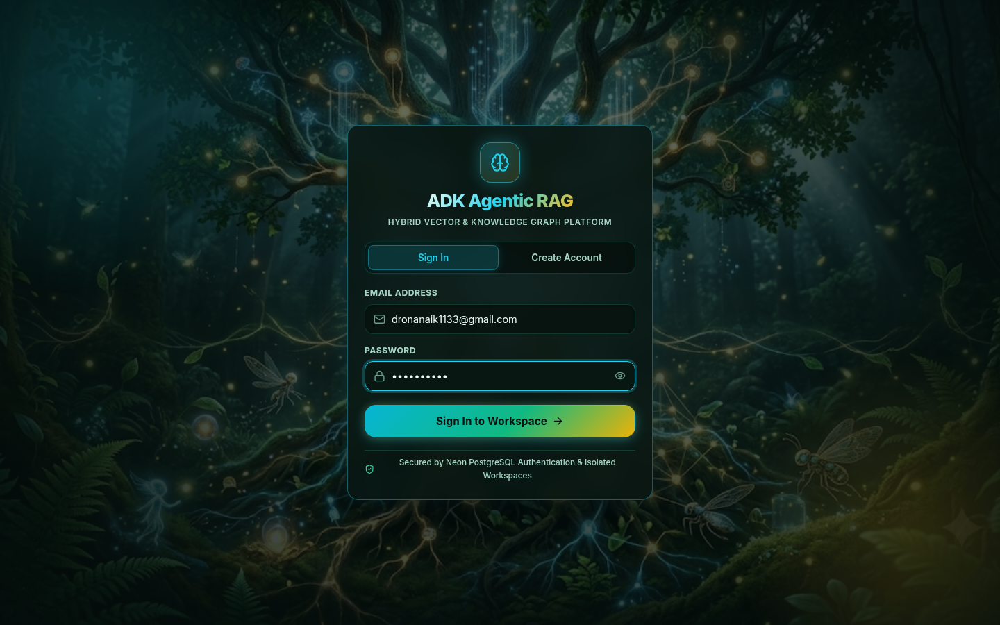
- Select the Sign In tab on the authentication modal.
- Enter your registered Email Address (e.g.,
dronanaik1133@gmail.com) and Password. - Click Sign In to Workspace → to authenticate against
POST /auth/loginand enter your isolated workspace.
Create a New Account¶
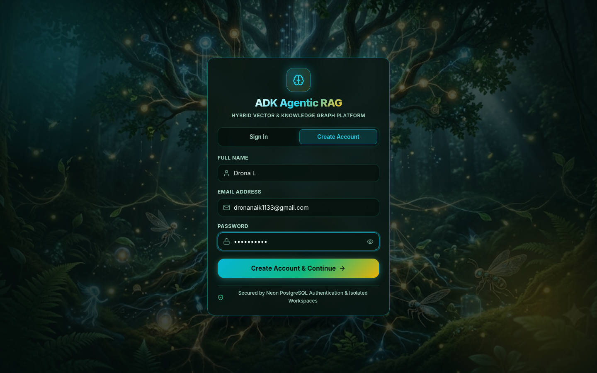
- Select the Create Account tab on the authentication card.
- Fill in your registration details:
- Full Name: Your display name shown in the top workspace header.
- Email Address: Your unique workspace identifier (
user_id). - Password: Minimum 6 characters, hashed using
PBKDF2-HMAC-SHA256before storage in Neon PostgreSQL. - Click Create Account & Continue → to register via
POST /auth/signupand automatically sign in.
Strict Multi-Tenant Data Isolation
Every document you upload, every 768-dimensional vector chunk stored in Neon PostgreSQL, and every :Entity / :RELATES_TO record created in Neo4j is strictly scoped to your authenticated user_id. No other user can view or query your workspace data.
Step 2: Uploading One or Multiple Documents (Upload Tab)¶
Once signed in, the top header displays your API Online health indicator, your User Profile Badge, the Sign Out button, and the 5-Tab Navigation Bar (Upload → Ingestion Pipeline → Documents → Agentic Chat → Knowledge Graph).
Upload Documents Dropzone¶
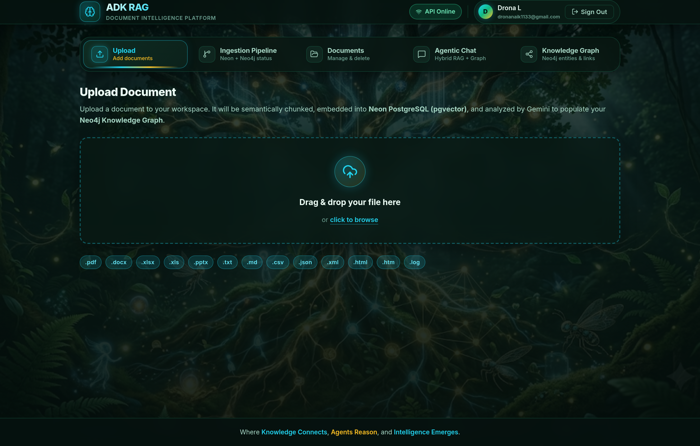
- The Upload tab is active by default when you sign in.
- Drag and drop one or multiple files onto the dashed bioluminescent dropzone, or click click to browse multiple files to open your system file picker.
- All 13 supported file extensions are displayed as badges below the dropzone:
.pdf,.docx,.xlsx,.xls,.pptx,.txt,.md,.csv,.json,.xml,.html,.htm, and.log.
Multi-Document Queue Selected & Ready to Ingest¶
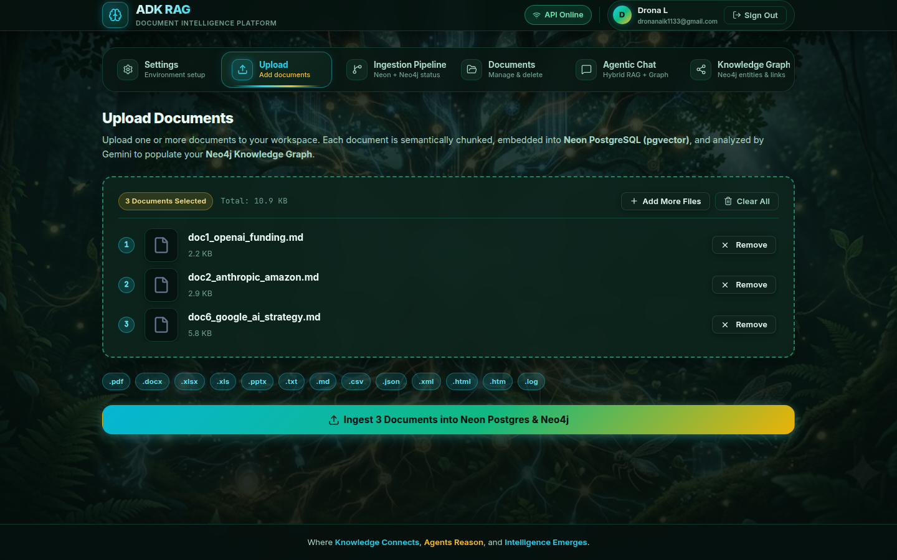
- Once one or more files are selected (e.g.,
doc1_openai_funding.md,doc2_anthropic_amazon.md, anddoc6_google_ai_strategy.md), the dropzone transforms into an interactive Multi-Document Queue Card displaying: - Selected Count & Total Size Badge: e.g.,
3 Documents Selected(Total: 10.9 KB). - Queue Controls: Click + Add More Files to append additional documents to the batch, or Clear All to reset the queue.
- Numbered File Preview Rows: Each queued document shows its batch order (
1,2,3…), format-specific icon, exact filename, formatted file size, and an individual × Remove button. - Click the primary gradient button Ingest 3 Documents into Neon Postgres & Neo4j (or Ingest into Neon Postgres & Neo4j for a single file) at the bottom of the view to launch the 5-step hybrid ingestion pipeline.
Step 3: Monitoring the Live 5-Step Ingestion Pipeline (Ingestion Pipeline Tab)¶
Clicking the Ingest button automatically transitions you to the Ingestion Pipeline tab (IngestionTab.jsx), which processes each queued document sequentially through all 5 stages while polling GET /ingest/progress every 450ms.
Live Per-Document 5-Step Hybrid Ingestion Execution¶
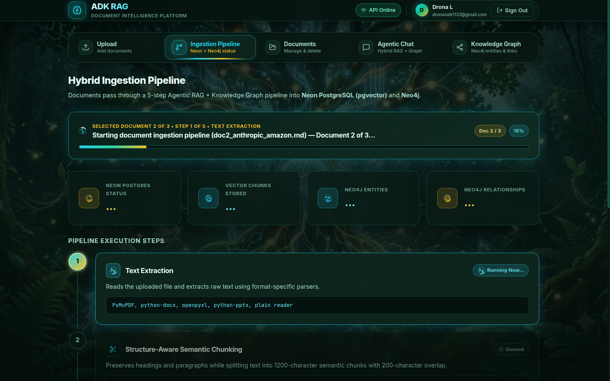
While documents are actively being processed:
- Per-Document Live Progress Banner:
- When multiple documents are selected, the header badge displays
SELECTED DOCUMENT 2 OF 3 • STEP S OF 5 • <STEP NAME>along with aDoc 2 / 3indicator and the per-document percentage progress bar (0%→100%for each file). - For a single document, it displays
STEP S OF 5 • <STEP NAME>. - Database Status Cards: Real-time counters for Neon Postgres Status (
Ready), Vector Chunks Stored, Neo4j Entities, and Neo4j Relationships update as each document finishes. - Active vs. Queued Step Badges:
- The currently executing stage highlights with a glowing cyan border and a
Running Now...spinner badge. - Upcoming stages remain in the
Queuedstate until the active stage completes.
Completed Batch Ingestion Summary & Stage Logs¶
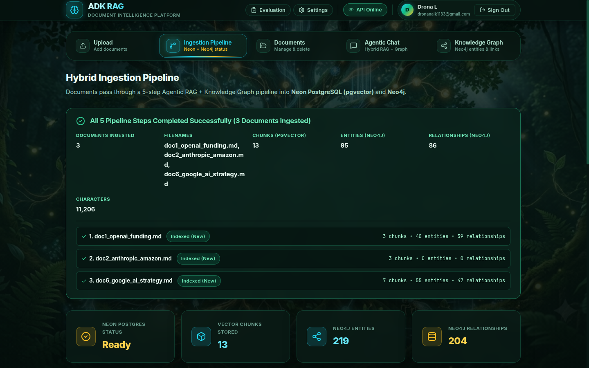
When all queued documents finish executing all 5 stages:
- Emerald Completion Banner (
All 5 Pipeline Steps Completed Successfully (3 Documents Ingested)): - Explicitly displays the total number of ingested documents when a multi-file batch completes.
- Summarizes aggregated metrics across the batch (Documents Ingested:
3, Filenames, Chunks (pgvector):13, Entities (Neo4j):126, Relationships (Neo4j):118, and Characters:11,205). - Lists a Per-Document Breakdown (
✓ 1. doc1_openai_funding.md,✓ 2. doc2_anthropic_amazon.md,✓ 3. doc6_google_ai_strategy.md) with each file's individual chunk, entity, and relationship counts. - Updated Database Counters: The 4 workspace metric cards immediately reflect the updated totals in Neon PostgreSQL and Neo4j.
- Per-Stage Output Logs: All 5 pipeline cards show green
✓ Completedbadges along with their concrete stage output for the completed run.
Automatic Redundant & Updated File Upload Handling (v2.1.1)
The ingestion pipeline computes a normalized SHA-256 content fingerprint (content_hash) for every uploaded file and automatically handles redundant or updated uploads:
- Exact Same File Uploaded Again (
Skipped (Already Indexed)): Skips redundant Gemini embedding and Neo4j extraction calls and reuses your existing indexed document. - Same Content with a Different Filename (
Skipped (Duplicate of <filename>)): Prevents duplicate chunks from skewing vector similarity scores and points to the existing filename. - Updated Version of an Existing File (
Updated Version): Atomically purges the old version's chunks from Neon PostgreSQL and its relationships/orphaned entities from Neo4j before indexing the updated document.
Step 4: Managing Indexed Documents (Documents Tab)¶
Switch to the Documents tab (DocumentsTab.jsx) to audit your indexed files or remove documents from your workspace.
Indexed Documents List¶
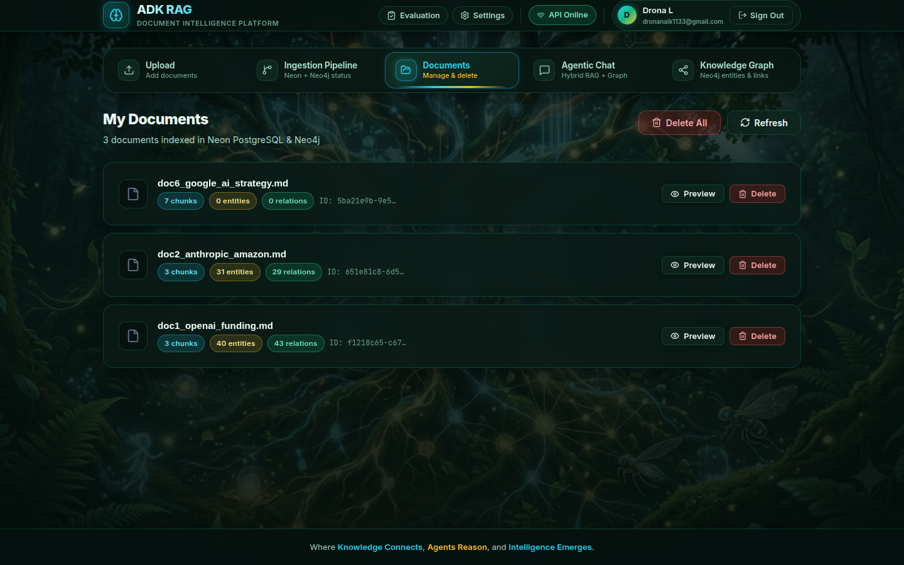
Each indexed document card displays:
- Filename & Format Icon: e.g.,
doc6_google_ai_strategy.md,doc2_anthropic_amazon.md, anddoc1_openai_funding.md - Neon PostgreSQL Vector Count Badge: e.g.,
7 chunks,3 chunks(cyan badge) - Neo4j Entity Count Badge: e.g.,
55 entities,31 entities,33 entities(gold badge) - Neo4j Relationship Count Badge: e.g.,
52 relations,31 relations,33 relations(emerald badge) - Document UUID: Truncated
doc_id(ID: 3cff2396-097...) - Refresh & Delete Controls: Top-right Refresh button and per-document Delete button.
Atomic Cascade Delete Confirmation¶
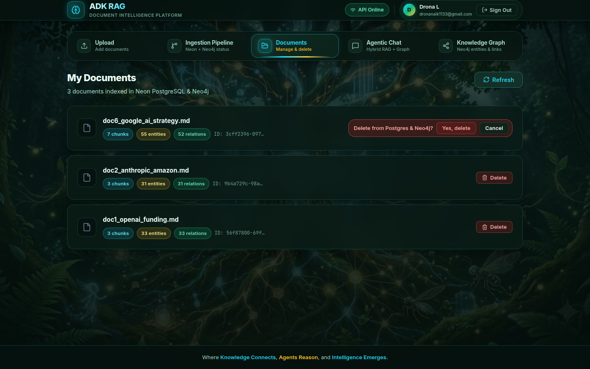
- Clicking Delete on any document card reveals an inline confirmation bar:
Delete from Postgres & Neo4j?with Yes, delete and Cancel buttons. - Clicking Yes, delete invokes
DELETE /documents/{doc_id}, which atomically: - Deletes the document metadata row and all associated
document_chunks(ON DELETE CASCADE) from Neon PostgreSQL. - Removes all
RELATES_TOedges, the:Documentnode, and any orphaned:Entitynodes for that document from Neo4j. - Clicking Cancel dismisses the confirmation prompt without modifying your data.
Step 5: Asking Questions in Agentic Chat (Agentic Chat Tab)¶
Switch to the Agentic Chat tab (ChatTab.jsx) to converse with the Google ADK LlmAgent powered by Gemini 2.5 Pro.
Starter Prompts & New Session View¶
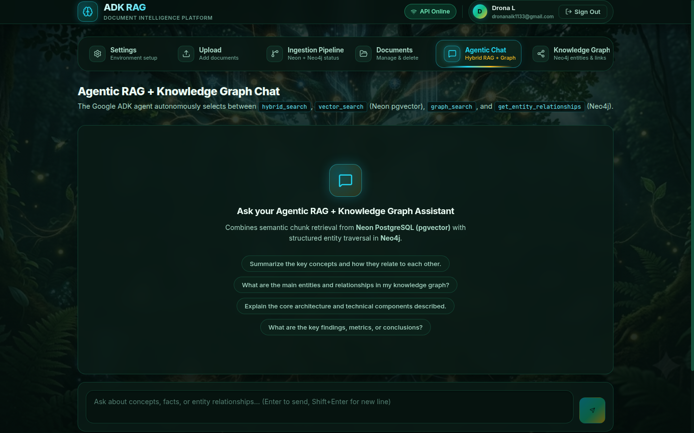
When starting a new session:
- Four clickable Starter Question Pills let you immediately test hybrid vector + graph retrieval:
- "Summarize the key concepts and how they relate to each other."
- "What are the main entities and relationships in my knowledge graph?"
- "Explain the core architecture and technical components described."
- "What are the key findings, metrics, or conclusions?"
- You can also type any custom question into the bottom input box and press Enter (or click Send).
Multi-Tool Grounded Response with Dual Citations¶
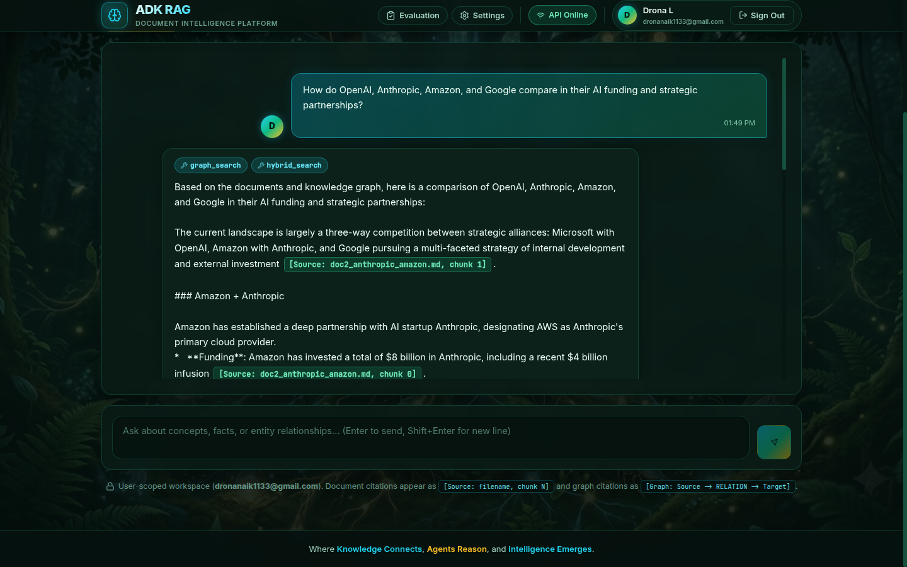
When you submit a cross-document question (e.g., "How do OpenAI, Anthropic, Amazon, and Google compare in their AI funding and strategic partnerships?"):
- Session Management Controls: The header displays a glowing
Session activebadge (preserving multi-turn ADKInMemorySessionServicememory) and aNew sessionbutton to reset the conversation. - Tool Execution Badges: At the top of the assistant bubble, tool chips show the exact backend tools the ADK agent autonomously executed (
hybrid_search,graph_search,get_entity_relationships, orvector_search). - Inline Dual Citations:
- Document Chunk Citations (
[Source: doc2_anthropic_amazon.md, chunk 1]) highlight in cyan/emerald, linking claims directly to semantic vector chunks in Neon PostgreSQL. - Knowledge Graph Citations (
[Graph: Latest Funding Round -> HAS_AMOUNT -> $6.6 Billion]) highlight in gold, tracing multi-hop entity relationships in Neo4j.
Step 6: Exploring the Neo4j Knowledge Graph (Knowledge Graph Tab)¶
Switch to the Knowledge Graph tab (GraphTab.jsx) to visually explore and query the domain-agnostic entities and directed relationships extracted from your documents.
Neo4j Knowledge Graph Topology Overview¶
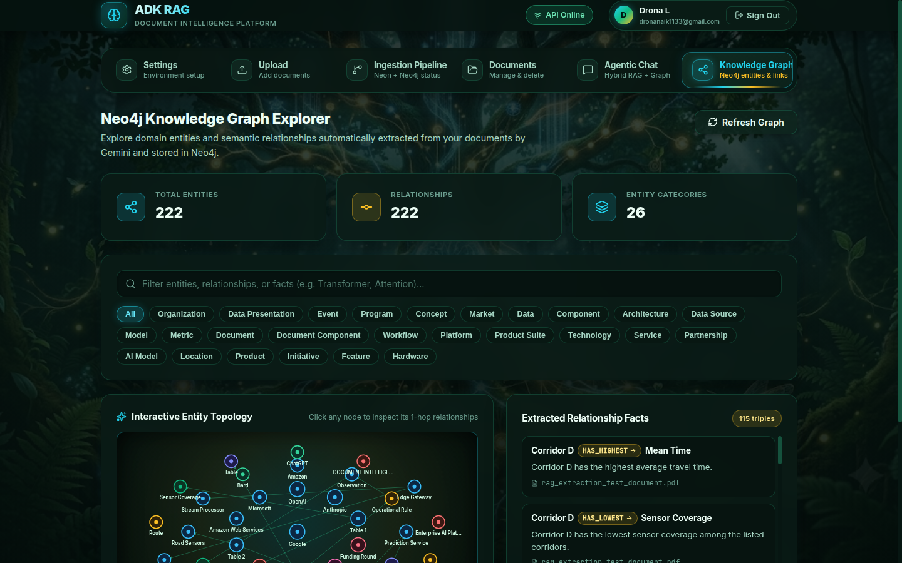
The Neo4j Knowledge Graph Explorer provides four synchronized views:
- Graph Summary Cards: Displays Total Entities (
179), Relationships (209), and Entity Categories (23). - Real-Time Search & Dynamic Category Filter Pills:
- Type any keyword into the search bar to filter entities, relationship types, or facts in real time.
- Click any dynamically inferred category pill (
All,Organization,Event,Model,Agreement,Funding Round,Metric,Product,Service,Person,Partnership,Document,Location,Infrastructure,AI Model,Initiative,Concept,Feature,Platform,Technology,Alliance,Year,Strategy,Market) to isolate specific node types and their 1-hop neighbors. - Interactive Entity Topology (Left Panel): Renders a radial SVG neural network where hub entities (such as
Google,OpenAI, andAnthropic) sit at the center connected to surrounding domain nodes color-coded by category. - Extracted Relationship Facts (Right Panel): Lists all extracted
(Source) -[RELATION]-> (Target)triples along with their natural-language fact sentence and source document attribution (doc1_openai_funding.md,doc2_anthropic_amazon.md,doc6_google_ai_strategy.md).
Selected Entity 1-Hop Neighborhood Inspector¶
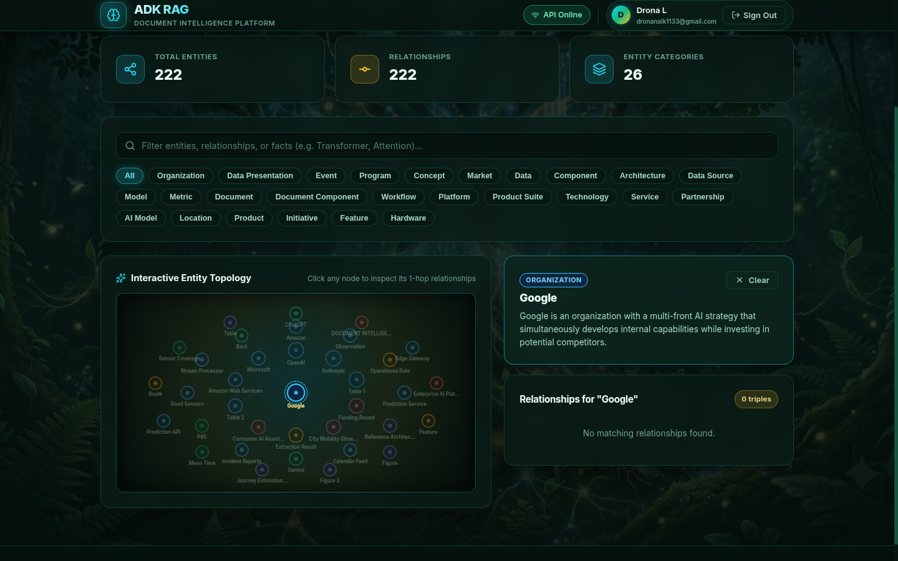
Clicking any node on the interactive SVG canvas (or clicking any entity name in the right-hand facts list) activates the 1-Hop Neighborhood Inspector:
- Gold Neighborhood Highlighting: All edges directly connected to the selected entity (
Google) illuminate in gold (#fbbf24) with relationship labels (HAS_MARKET_SHARE_IN,HAS_LONG_TERM_VISION,HAS_INTEGRATED_CAPABILITY,DEVELOPS,ANALYZES) rendered along the connecting paths, while unconnected nodes dim. - Selected Entity Detail Card (Top-Right): Displays the entity's category badge (
ORGANIZATION), canonical name (Google), Gemini-extracted summary description ("Google's approach to the AI competitive landscape reveals a sophisticated multi-front strategy that simultaneously develops internal capabilities while investing in potential competitors."), and a× Clearbutton to return to the full graph view. - Filtered Entity Relationships List (Bottom-Right): Automatically filters the right-hand panel (
Relationships for "Google") to show only the38 triplesinvolving the selected node.